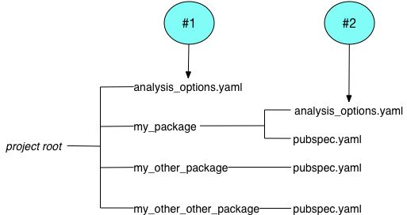

Customizing static analysis
- The analysis options file
- Enabling stricter type checks
- Enabling and disabling linter rules
- Enabling analyzer plugins (experimental)
- Excluding code from analysis
- Customizing analysis rules
- Resources
Static analysis allows you to find problems before executing a single line of code. It's a powerful tool used to prevent bugs and ensure that code conforms to style guidelines.
With the help of the analyzer, you can find simple typos. For example, perhaps an accidental semicolon made its way into an if statement:
dartvoid increment() { if (count < 10) ; count++; }If properly configured, the analyzer points to the semicolon and produces the following warning:
info - example.dart:9:19 - Unnecessary empty statement. Try removing the empty statement or restructuring the code. - empty_statements
The analyzer can also help you find more subtle problems. For example, perhaps you've forgotten to close a sink method:
dartvar controller = StreamController<String>();info - Unclosed instance of 'Sink'. Try invoking 'close' in the function in which the 'Sink' was created. - close_sinks
In the Dart ecosystem, the Dart Analysis Server and other tools use the analyzer package to perform static analysis.
You can customize static analysis to look for a variety of potential problems, including errors and warnings specified in the Dart language spec. You can also configure linter rules, to ensure that your code complies with the Dart Style Guide and other suggested guidelines in Effective Dart. Tools such as dart analyze, flutter analyze, and IDEs and editors use the analyzer package to evaluate your code.
This document explains how to customize the behavior of the analyzer using either an analysis options file or comments in Dart source code. If you want to add static analysis to your tool, see the analyzer package docs and the Analysis Server API Specification.
The analysis options file
#Place the analysis options file, analysis_options.yaml, at the root of the package, in the same directory as the pubspec file.
Here's a sample analysis options file:
include: package:lints/recommended.yaml
analyzer:
exclude: [build/**]
language:
strict-casts: true
strict-raw-types: true
linter:
rules:
- cancel_subscriptionsThe sample illustrates the most common top-level entries:
- Use
include: urlto bring in options from the specified URL—in this case, from a file in thelintspackage. Because YAML doesn't allow duplicate keys, you can include at most one file. - Use the
analyzer:entry to customize static analysis: enabling stricter type checks, excluding files, ignoring specific rules, changing the severity of rules, or enabling experiments. - Use the
linter:entry to configure linter rules.
If the analyzer can't find an analysis options file at the package root, it walks up the directory tree, looking for one. If no file is available, the analyzer defaults to standard checks.
Consider the following directory structure for a large project:

The analyzer uses file #1 to analyze the code in my_other_package and my_other_other_package, and file #2 to analyze the code in my_package.
Enabling stricter type checks
#If you want stricter static checks than the Dart type system requires, consider enabling the strict-casts, strict-inference, and strict-raw-types language modes:
analyzer:
language:
strict-casts: true
strict-inference: true
strict-raw-types: trueYou can use the modes together or separately; all default to false.
strict-casts: <bool>- A value of
trueensures that the type inference engine never implicitly casts fromdynamicto a more specific type. The following valid Dart code includes an implicit downcast from thedynamicvalue returned byjsonDecodetoList<String>that could fail at runtime. This mode reports the potential error, requiring you to add an explicit cast or otherwise adjust your code.
void foo(List<String> lines) {
...
}
void bar(String jsonText) {
foo(jsonDecode(jsonText)); // Implicit cast
}error - The argument type 'dynamic' can't be assigned to the parameter type 'List<String>'. - argument_type_not_assignablestrict-inference: <bool>- A value of
trueensures that the type inference engine never chooses thedynamictype when it can't determine a static type. The following valid Dart code creates aMapwhose type argument cannot be inferred, resulting in an inference failure hint by this mode:
final lines = {}; // Inference failure
lines['Dart'] = 10000;
lines['C++'] = 'one thousand';
lines['Go'] = 2000;
print('Lines: ${lines.values.reduce((a, b) => a + b)}'); // Runtime errorwarning - The type argument(s) of 'Map' can't be inferred - inference_failure_on_collection_literalstrict-raw-types: <bool>- A value of
trueensures that the type inference engine never chooses thedynamictype when it can't determine a static type due to omitted type arguments. The following valid Dart code has aListvariable with a raw type, resulting in a raw type hint by this mode:
List numbers = [1, 2, 3]; // List with raw type
for (final n in numbers) {
print(n.length); // Runtime error
}warning - The generic type 'List<dynamic>' should have explicit type arguments but doesn't - strict_raw_typeEnabling and disabling linter rules
#The analyzer package also provides a code linter. A wide variety of linter rules are available. Linters tend to be nondenominational—rules don't have to agree with each other. For example, some rules are more appropriate for regular Dart packages and others are designed for Flutter apps. Note that linter rules can have false positives, unlike static analysis.
Enabling Dart team recommended linter rules
#The Dart team provides two sets of recommended linter rules in the lints package:
- Core rules
- Help identify critical issues that are likely to lead to problems when running or consuming Dart code. All code should pass these linter rules. Packages that are uploaded to pub.dev have a package score that's based in part on passing these rules.
- Recommended rules
- Help identify additional issues that may lead to problems when running or consuming Dart code, and enforce a single, idiomatic style and format. We recommend that all Dart code use these rules, which are a superset of the core rules.
To enable either set of lints, add the lints package as a dev dependency:
$ dart pub add --dev lintsThen edit your analysis_options.yaml file to include your preferred rule set:
include: package:lints/<RULE_SET>.yamlFor example, you can include the recommended rule set like this:
include: package:lints/recommended.yamlEnabling individual rules
#To enable a single linter rule, add linter: to the analysis options file as a top-level key, followed by rules: as a second-level key. On subsequent lines, specify the rules that you want to apply, prefixed with dashes (the syntax for a YAML list). For example:
linter:
rules:
- always_declare_return_types
- cancel_subscriptions
- close_sinks
- combinators_ordering
- comment_references
- invalid_case_patterns
- one_member_abstracts
- only_throw_errors
- prefer_single_quotesDisabling individual rules
#If you include an analysis options file such as the one in lints, you might want to disable some of the included rules. Disabling individual rules is similar to enabling them, but requires the use of a map rather than a list as the value for the rules: entry, so each line should contain the name of a rule followed by either : false or : true.
Here's an example of an analysis options file that uses all the recommended rules from lints except avoid_shadowing_type_parameters. It also enables the lint await_only_futures:
include: package:lints/recommended.yaml
linter:
rules:
avoid_shadowing_type_parameters: false
await_only_futures: trueEnabling analyzer plugins (experimental)
#The analyzer has experimental support for plugins. These plugins integrate with the analyzer to add functionality such as new diagnostics, quick fixes, and custom code completion. You can enable only one plugin per analysis_options.yaml file. Enabling an analyzer plugin increases how much memory the analyzer uses.
Don't use analyzer plugins if your situation meets either of the following conditions:
- You use a development machine with less than 16 GB of memory.
- You use a mono-repo with more than 10
pubspec.yamlandanalysis_options.yamlfiles.
You can find a few analyzer plugins on pub.dev.
To enable a plugin:
Add the package containing the plugin as a dev dependency.
$ dart pub add --dev <your_favorite_analyzer_plugin_package>Edit your
analysis_options.yamlfile to enable the plugin.yamlanalyzer: plugins: - your_favorite_analyzer_plugin_packageTo indicate specific plugin functionality to enable, such as new diagnostics, additional setup might be required.
Excluding code from analysis
#Sometimes it's OK for some code to fail analysis. For example, you might rely on code generated by a package that you don't own—the generated code works, but produces warnings during static analysis. Or a linter rule might cause a false positive that you want to suppress.
You have a few ways to exclude code from analysis:
- Exclude entire files from analysis.
- Stop specific non-error rules from being applied to individual files.
- Stop specific non-error rules from being applied to individual lines of code.
You can also disable specific rules for all files or change the severity of rules.
Excluding files
#To exclude files from static analysis, use the exclude: analyzer option. You can list individual files, or use glob pattern syntax. All usages of glob patterns should be relative to the directory containing the analysis_options.yaml file.
analyzer:
exclude:
- lib/client.dart
- lib/server/*.g.dart
- test/_data/**Suppressing diagnostics for a file
#To ignore a specific non-error diagnostic for a specific file, add an ignore_for_file comment to the file:
// ignore_for_file: unused_local_variableThis acts for the whole file, before or after the comment, and is particularly useful for generated code.
To suppress more than one diagnostic, use a comma-separated list:
// ignore_for_file: unused_local_variable, duplicate_ignore, dead_codeTo suppress all linter rules, add a type=lint specifier:
// ignore_for_file: type=lintSuppressing diagnostics for a line of code
#To suppress a specific non-error diagnostic on a specific line of Dart code, put an ignore comment above the line of code. Here's an example of ignoring code that causes a runtime error, as you might do in a language test:
// ignore: invalid_assignment
int x = '';To suppress more than one diagnostic, supply a comma-separated list:
// ignore: invalid_assignment, const_initialized_with_non_constant_value
const x = y;Alternatively, append the ignore comment to the line that it applies to:
int x = ''; // ignore: invalid_assignmentSuppressing diagnostics in a pubspec file
#If you need to suppress a non-error diagnostic from the analyzer in a pubspec.yaml file, add an ignore comment above the affected line.
The following example ignores the sort_pub_dependencies lint as it wants to put the flutter dependency first:
dependencies:
flutter:
sdk: flutter
# ignore: sort_pub_dependencies
collection: ^1.19.0Customizing analysis rules
#Each analyzer diagnostic and linter rule has a default severity. You can use the analysis options file to change the severity of individual rules, or to always ignore some rules.
The analyzer supports three severity levels:
info- An informational message that doesn't cause analysis to fail. Example:
dead_code warning- A warning that doesn't cause analysis to fail unless the analyzer is configured to treat warnings as errors. Example:
invalid_null_aware_operator error- An error that causes analysis to fail. Example:
invalid_assignment
Ignoring rules
#You can ignore specific analyzer diagnostics and linter rules by using the errors: field. List the rule, followed by : ignore. For example, the following analysis options file instructs the analysis tools to ignore the TODO rule:
analyzer:
errors:
todo: ignoreChanging the severity of rules
#You can globally change the severity of a particular rule. This technique works for regular analysis issues as well as for lints. For example, the following analysis options file instructs the analysis tools to treat invalid assignments as warnings and missing returns as errors, and to provide information (but not a warning or error) about dead code:
analyzer:
errors:
invalid_assignment: warning
missing_return: error
dead_code: infoResources
#Use the following resources to learn more about static analysis in Dart:
Unless stated otherwise, the documentation on this site reflects Dart 3.6.0. Page last updated on 2024-12-10. View source or report an issue.